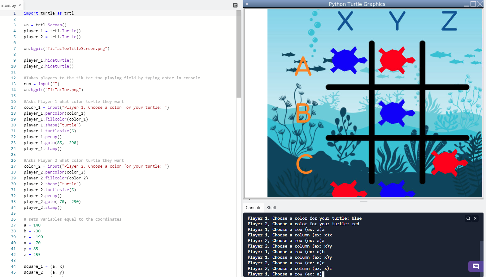

Home
Portfolio
About Me
This is my Portfolio Page!
Tic Tac Turtle

This is my group's project for 1.1.9. We call our project "Tic Tac Turtle". This game is just like the original Tic Tac Toe, but with a twist. Players 1 and 2 are allowed to change the color of their turtle, which is used in replacement of an "X" and an "O". The game rules the exact same, however we implemented a starting screen and a feature where players have to input a coordinate for the column and the row in order to place their turtles.